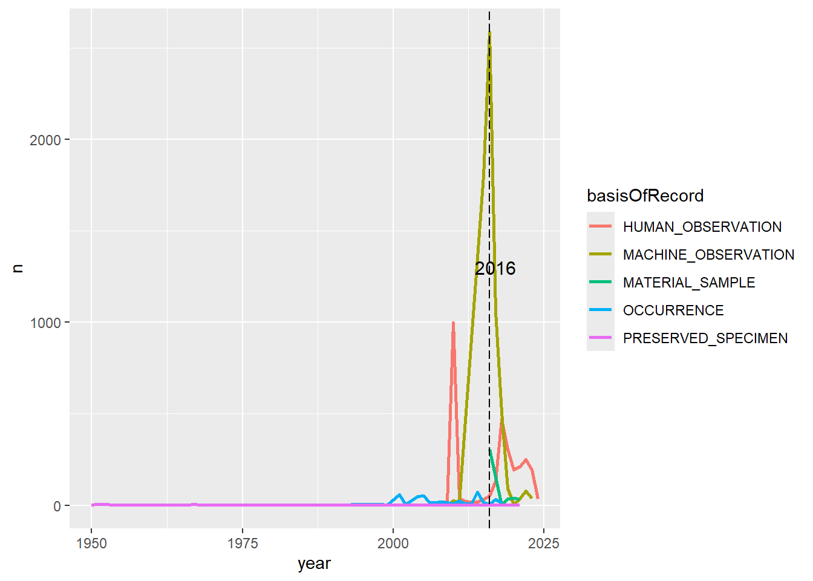

Introducción al procesamiento, visualización y análisis de datos espaciales en R. Parte 1.
Authors
Diego J. Lizcano
Andres Felipe Suárez-Castro
Published
April 12, 2024
Mañana del Día 1
Datos y organización general
En primer lugar, es importante recordar que la organización es clave cuando se está generando un nuevo código. En este sentido, le recomendamos que cree una carpeta en su disco duro (C:) para cada nuevo proyecto. Puede hacer esto como un proyecto de Rstudio; para esto diríjase a: Archivo> Nuevo proyecto o simplemente cree una nueva carpeta en su explorador y establezca su directorio de trabajo allí. Dentro de esta carpeta, cree una carpeta de datos donde guardará sus datos sin procesar. Puede almacenar algunos objetos intermedios en otra subcarpeta. También cree una carpeta para su código R y una carpeta para guardar sus figuras.
la organización de carpetas que se sugere es:
C://curso
- data
- R
- fig
Caso de estudio
Durante el curso utilizaremos datos que vamos a descargar de la plataforma GBIF con el paquete rgbif. El ejercicio lo haremos con una especie de mamífero amenazado, la danta de montaña (Tapirus pinchaque).
Danta de montaña
Tenga en cuenta que se requiere conexión a internet y que podemos estar descargando muchos datos desde GBIF, así que este paso puede tardar unos segundos…
Code
######################################### DOWNLOAD AND CLEAN DATA FROM GBIF #########################################library(rgbif)# Si únicamente descargará los datos de una especie ----species1 <-c("Tapirus pinchaque")# Descargar datos de ocurrencia de GBIF para esta especie; Este proceso puede tomar tiempo si existen muchos puntos!gbif_data_sp1 <-occ_data(scientificName = species1, hasCoordinate =TRUE, limit =20000)# crear una tabla con los datos descargados:dat_sp1 <- gbif_data_sp1$data# Si "Records found" es más grande que "Records returned", debe incrementar el argumento 'limit' arriba -- consulte help(occ_data) para ver opciones y limitaciones# Si la especie tiene una distribución amplia, pero usted desea trabajar en una región particular, puede descargar los datos para unas coordinadas particulares:# colombia_data <- occ_data(scientificName = species1, hasCoordinate = TRUE, limit = 20000, decimalLatitude = "0.996444, 5")#decimalLongitude = "-10, 10", decimalLatitude = "35, 55") # note que los intervalos de coordenadas deben estar especificadas en el siguiente formato: "smaller, larger" (e.g. "-5, -2")# gbif_data
Revise el entorno global Global Environment, en donde ahora deben aparecer tres objetos en la memoria. Uno llamado myspecies que corresponde a la especie. Otro llamado “gbif_data” con los datos descargados del GBIF y el objeto “dat” que es una tabla que contiene los registros de la especie de interés.
Revisión inicial de los datos
Una vez que la tabla esté cargada en el entorno global, es necesario hacer algunas verificaciones iniciales de los datos. Hay algunas funciones clave en R que nos permiten ver los datos de diferentes maneras. Es deseable que estas funciones se conviertan en una rutina estándar en sus scripts, pues le ayudarán a determinar si sus datos están formateados correctamente.
Primero, verificaremos el tipo de datos de cada una de las variables en nuestra tabla de datos. Tome un tiempo para entender cada una de estas variables.
Code
# ejecute una sola linea a la vezhead(dat_sp1) # ver los primeros seis registros de la tablatail(dat_sp1) # ver los últimos seis registros de la tabla# ver los datos de la tablaView(dat_sp1) # ver toda la tablanames(dat_sp1) # nombres de la columnasnrow(dat_sp1) # número de filas de la tablancol(dat_sp1) # número de columnas de la tablalength(unique(dat_sp1$stateProvince)) # número de categorías únicas de la columna "stateProvince"unique(dat_sp1$stateProvince) # categorías únicas de la columna "stateProvince"length(unique(dat_sp1$year)) # número de categorías únicas de la columna "stateProvince"unique(dat_sp1$year) # años únicos de los registrostable(dat_sp1$publishingCountry) # número de registros por paíssummary(dat_sp1) # resumen de la información disponible en la tabla
Ordenamiento de datos
Ordenar los datos significa manipularlos con el fin de facilitar su exploración y análisis. El paquete "dplyr", incluido en tidyverse, proporciona una serie de funciones útiles en este sentido. El marco conceptual que sustenta dplyr se llama “Gramática de la manipulación de datos”. A continuación revisaremos diferentes funciones para filtrar, resumir y combinar diferentes tablas.
Code
# cargar el paquete dplyrlibrary(dplyr)
Filtro de datos
Empecemos por explorar los datos para una región. Para ello, podemos utilizar la función filter, filtrando los datos de Risaralda, Quindío, Caldas y Tolima.
También es posible que deseemos seleccionar solamente algunas columnas de nuestro conjunto de datos. Podemos hacer esto fácilmente con las herramientas de indexación de dataframes de R. En nuestro caso selecionaremos las columnas que son de nuestro interes.
Code
# get the columns that matter for mapping and cleaning the occurrence data:sp1_coords <- gbif_data_sp1$data[ , c("scientificName", "decimalLongitude", "decimalLatitude", "individualCount", "occurrenceStatus", "coordinateUncertaintyInMeters", "institutionCode", "references")]head(sp1_coords)
Combinación de tablas
Nuestra tabla de registros tiene información específica sobre las localidades de una sola especie. Con el fin de entender como combinar tablas descargaremos los datos de otra especie. En este caso el Oso Andino (Tremarctos ornatus).
Oso andino
Tenga en cuenta que se requiere conexión a internet y que podemos estar descargando muchos datos desde GBIF, así que este paso puede tardar unos segundos…
Code
species2 <-c("Tremarctos ornatus")# download GBIF occurrence data for this species; this takes time if there are many data points!gbif_data_sp2 <-occ_data(scientificName = species2, hasCoordinate =TRUE, limit =20000)# save to tabledat_sp2 <- gbif_data_sp2$data
El paquete dplyr proporciona un conjunto útil de funciones para unir tablas que tienen columnas en común. Escriba ?full_join en su consola y obtendrá una lista de todos los tipos de unión que admite dplyr.
Hoy usaremos full_join para unir los registros de dos especies en una sola tabla. La función full_join permite mantener las filas que no coinciden también). Otras funcionalidades de join se ven en la version ampliada de este curso.
Code
dat_oso_danta <-full_join(x = dat_sp2, y = dat_sp1)
Visualización de datos
A menudo, es más fácil explorar datos mediante el uso de gráficos. R tiene buenos paquetes para realizar gráficos y visualizar datos. Hoy usaremos el paquete ggplot2.
Code
library(ggplot2)
Primero, vamos a generar un histograma para revisar la distribución de los registos por año. Por ahora no nos preocuparemos demasiado por la estética de la gráfica.
`stat_bin()` using `bins = 30`. Pick better value with `binwidth`.
El componente ggplot(dat_input) determina la tabla de datos de la cual obtendremos las variables. Esta función también crea la página para el gráfico. El componente aes() hace referencia a la estética del gráfico, y aquí lo usamos para declarar que el eje x que corresponde a el año. Luego geom_histogram() declara el tipo de gráfico que se utilizará. En este caso se refiere al histograma.
Inténtelo de nuevo, pero esta vez añada un color para cada especie.
Code
ggplot(dat_oso_danta) +aes(x = year, fill = scientificName) +geom_histogram()
`stat_bin()` using `bins = 30`. Pick better value with `binwidth`.
Vamos a graficar de nuevo los puntos de acuerdo a la especie. Para ello, incluya el argumento “color = scientificName” dentro de aes(). Observe que podemos ver que hay unos puntos que se comportan como outliers y debemos eliminarlos.
Code
ggplot(dat_oso_danta) +aes(x = decimalLongitude, y = decimalLatitude, color = scientificName) +geom_point()
Vamos a filtrar las dos especies de interes con la función filter()
En este caso, el operador %in% verifica cuáles elementos de la columna scientificName corresponden a las dos especies evaluadas. Es decir sirve para filtrar usando un vector. Observe que primero filtramos por las especies y luego por las coordenadas. Para ejecutar varios pasos como los anteriores, uno despues del otro podemos usar la función pipe %>%, la cual permite utilizar el resultado de un paso como el primer argumento del siguiente.
Veamos como queda
Code
ggplot(dat_oso_danta_filtrado) +aes(x = decimalLongitude, y = decimalLatitude, color = scientificName) +geom_point()
Agrupación y resumen de datos
Presentar los datos en forma de gráficos es importante, pero ver los números concretos también puede ser útil. Supongamos que queremos identificar la elevación promedio y la desviación estándar a la que han sido recolectados los registros, así como el número de registros por departamento.
Para hacer esto, vamos a agrupar los datos con la función group_by seguida de summarize para obtener las estadísticas en cada departamento.
group_by() toma una tabla existente y la convierte en una tabla agrupada donde las operaciones se realizan “por grupo”. Revise el objeto datg y verá que los datos en sí mismos no han cambiado. Sin embargo, los datos están agrupados en 31 departamentos.
Ahora podemos utilizar esa tabla para resumir los datos con algunas estadísticas deseadas
# A tibble: 68 × 4
stateProvince mean_elev sd_elev n
<chr> <dbl> <dbl> <int>
1 Amazonas NaN NA 96
2 Ancash NaN NA 18
3 Antioquia 2062. 713. 30
4 Apurimac NaN NA 20
5 Ayacucho NaN NA 5
6 Azuay NaN NA 2
7 Bogotá, D.C. 2794 NA 1
8 Bolívar 1106. 0 3
9 Boyacá 2188. 1085. 69
10 CaJamarca NaN NA 1
# ℹ 58 more rows
Recuerde que para ejecutar varios pasos, podemos usar la función %>%, la cual permite utilizar el resultado de una función como el primer argumento del siguiente. Por ejemplo, estas líneas de código hacen lo mismo:
Code
group_by(dat_oso_danta_filtrado, stateProvince)#es lo mismo quedat_oso_danta_filtrado %>%group_by(., stateProvince)
Las función %>% es muy útil para encadenar operaciones de varios pasos en tablas, lo que hace que nuestro código sea aún más fácil de entender y leer.
Aquí calculamos la desviación estándar y media de la elevación para cada departamento, así como el número de filas (registros) n () para cada departamento, pero antes hemos agrupado por especie.
Supongamos que ahora queremos visualizar la distribución de registros a través del tiempo. Además, queremos ver la incidencia de diferentes técnicas de muestreo en el registro de especies. En primer lugar, necesitamos contar los registros por año.
Ejercicio
Utilice las funciones group_by, summarize y filter para contar los registros de cada especie por año desde 1950 por cada técnica de muestreo (basisOfRecord)
La función anotate() nos permite añadir texto en ubicaciones específicas de nuestro gráfico
Code
p3<-p2 +annotate("text", label ="2016", x =2017, y =1300, size =4, colour ="black")p3

Finalmente, podemos cambiar el tamaño del texto de los ejes
Code
e1<-p3 +theme_bw()+theme(legend.position ="right",legend.title =element_blank(),legend.text =element_text(size =14),text =element_text(size =14),axis.text.x =element_text(size =12),axis.text.y =element_text(size =12))+ylab("# registros")+xlab("año")+ggtitle("Número de registros de danta y oso")e1
Citacion adecuada de los datos
Tenga en cuenta que es una buena practica citar correctamente los datos que se descargan de GBIF.
Code
# get the DOIs for citing these data properly:gbif_citation(gbif_data_sp1) # para la dantagbif_citation(gbif_data_sp2) # para la el oso# nota: si necesita o prefiere solo un DOI para todo el conjunto de datos, descargue el conjunto de datos directamente desde www.gbif.org y luego importe el .csv a R. ¡Es muy importante citar correctamente las fuentes de datos! GBIF no es una fuente, sólo un depósito para muchas personas que trabajaron muy duro para recopilar estos datos y ponerlos a disposición.
¡Hemos llegado al final de la mañana! Los conceptos aprendidos el día de hoy serán fundamentales para sacar el mayor provecho en la tarde. Es hora de Almorzar :)
Citation
BibTeX citation:
@online{j. lizcano2024,
author = {J. Lizcano, Diego and Felipe Suárez-Castro, Andres},
title = {Introducción Al Procesamiento, Visualización y Análisis de
Datos Espaciales En {R}},
date = {2024-04-12},
url = {https://dlizcano.github.io/spatialdata_lite/},
langid = {en}
}
For attribution, please cite this work as:
J. Lizcano, Diego, and Andres Felipe Suárez-Castro. 2024.
“Introducción Al Procesamiento, Visualización y Análisis de Datos
Espaciales En R.” April 12, 2024. https://dlizcano.github.io/spatialdata_lite/.
![]()